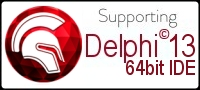
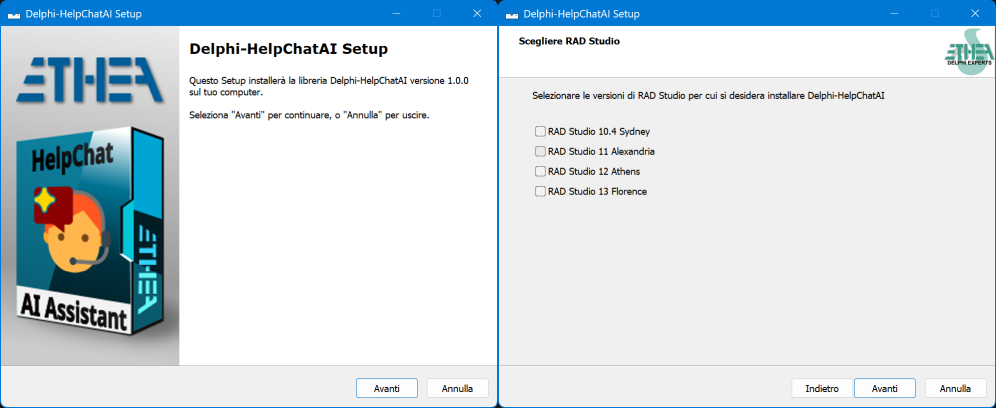

Related links: https://www.embarcadero.com/ - https://learndelphi.org/
Your users do not read the manual: they ask. HelpChatAI puts a chat bubble in the corner of
your application, answers “how do I export this grid?” from your own documentation, and
knows which screen the user is on while answering. F1 opens it, through the standard Delphi
help system, so the HelpKeyword you already wrote keeps working.
| Component | Description |
|---|---|
TVclHelpChatAI is the VCL component: drop it on the main form, set Active, and you have the bubble, F1 contextual help and the chat panel (a WebView2 TEdgeBrowser), either in its own tool window or embedded in a container of yours. Colours follow the active VCL style |
|
TFmxHelpChatAI is the FireMonkey twin (Delphi 12+): same settings, same engine, the chat in a TWebBrowser. F1 through the host form's OnKeyDown, light/dark theme instead of VCL styles. Available only for Delphi 12 and 13 |
help-index.json) from the Markdown pages of your
manual, with the HelpIndexBuilder tool.HelpKeyword/HelpContext of the focused control, the active tab.docsearch finds the right page offline and quotes it, with no API
key at all; claude, openai and gemini read the pages the retriever found and answer
from those, citing the source and saying when they do not know.The engine knows nothing about the UI: it runs inside your application or on a HelpChatAI
server, chosen in a configuration file, so the model API key never has to reach the user's
machine. When it has to, OnDecryptSecret lets you keep it encrypted in the configuration
and decrypt it the way your application sees fit.
Provider |
Needs | Streams | Actions |
|---|---|---|---|
docsearch |
the documentation index, no key | no | no |
claude |
ANTHROPIC_API_KEY |
yes | yes |
openai |
OPENAI_API_KEY, nothing for a local model |
yes | yes |
gemini |
GEMINI_API_KEY |
yes | yes |
openai is wider than its name: Chat Completions is the API that Azure OpenAI, Groq,
OpenRouter, Mistral, DeepSeek, Ollama and LM Studio also speak, so BaseUrl and Model are
enough to point the same provider at any of them — including a model running on the user's own
machine, where nothing leaves the PC.
Assistants in helpchatai.json lists the assistants the user may switch between from the
panel: each one has a name, a provider, and the model, endpoint and key it adds to that
provider's section when they differ — three local models on one Ollama are three entries on
openai. Assistant names the one in use at start; the choice made in the panel is remembered
per user. The header shows the icon of the model in use (deduced from the model name, then from
the endpoint, then from the provider; Icon overrides it), with name and model as the tooltip,
and with more than one assistant a click on it opens the list. With no list, Provider alone is
the one assistant and nothing can be switched.
{
"Assistant": "Claude",
"Assistants": [
{ "Name": "Claude", "Provider": "claude", "Model": "claude-haiku-4-5" },
{ "Name": "Gemini", "Provider": "gemini", "Model": "gemini-3.8-flash" },
{ "Name": "Gemma (local)", "Provider": "openai", "Model": "gemma4:12b", "BaseUrl": "http://localhost:11434/v1" }
]
}
The icons of the providers and models are those of lobe-icons (MIT); the logos themselves are trademarks of their respective owners.
A line that starts with / in the question box is a command, answered without the model:
/who (assistant, model, provider, endpoint), /use name and /retry [name] (switch, ask
again), /search words (the pages the answer would be grounded on), /pages and /doc page,
/context (the screen F1 knows), /actions (what the assistant can do here), /check (the
configuration check), /stats, /clear, /pdf, /copy, /attach, /help. EnabledCommands
on the component is the set the panel accepts: all of them by default except /prompt, which
shows the instructions and excerpts the last question went with, and /run action name=value,
which runs a registered action by hand (with the usual confirmation). Every answer starts with
what it answers, e.g. “Available actions (/actions):“.
Everything the panel does can be done from code on the component: ExecuteCommand(hccActions)
shows an answer in the panel (any command, enabled or not), ExplainCommand(hccActions) returns
it as text without opening anything, and ClearConversation, SelectAssistant, Assistants,
RetryLastQuestion, SaveConversationPdf, CopyLastAnswer and AttachFile do what their buttons do.
An “Installer” ready to use is located in the Release area: Download the Installer.
The Installer automatically detects your Delphi versions, installs sources, builds and installs packages and adds source paths.

To do it by hand instead:
packages/ — Delphi13,
Delphi12, Delphi11 or Delphi10.4dclHelpChatAIVcl (and
dclHelpChatAIFmx, then add source and Ext/MarkdownProcessor/source to the library path.Tools/Build_Packages.cmd [Delphi13|Delphi12|Delphi11|Delphi10.4|all] builds them from a
command line.
Ship WebView2Loader.dll (Redist/WebView2/x86|x64) next to your executable; the WebView2
runtime itself is already part of Windows 11 and of every machine with Edge.
The library is also published on delphi.dev as the package EtheaDev.HelpChatAI (Delphi 10.4 to 13, Win32 and Win64): you can install it with DPM, the Delphi Package Manager, as an alternative to the Setup. From the IDE, right click on your project in the Project Manager and choose Manage DPM Packages, or from the command line:
dpm install EtheaDev.HelpChatAI <path of your project>.dprojDPM downloads the package, builds it for the Delphi version and the platforms of your project and adds it to the project. Its dependencies are installed automatically: EtheaDev.MarkdownProcessor from delphi.dev and Indy from your Delphi installation.
Follow the Project Site to learn how to add an AI help assistant to your Delphi application, and how to make its answers good.
| Page | What you find |
|---|---|
| Quick Start | From an empty form to a working chat |
| The VCL component | Bubble, F1, embedding, dictation, the design-time preview |
| The FMX component | What FireMonkey does differently |
| Providers | The five of them, their settings, writing your own |
| Assistants | Several providers and models in one panel, and the switch between them |
| Slash commands | /who, /search, /actions… and everything the panel does, from code |
| The documentation index | Building help-index.json, and the pages shown inside the panel |
| Actions | An assistant that does things, safely |
| Attaching documents | Handing the assistant a PDF, an image or a text file |
| Saving and copying | The PDF of an answer, its header and footer, and the clipboard |
| Running the engine on a server | When the API key must not be on the user's machine |
| Configuration | helpchatai.json, and checking a configuration |
| Security and privacy | What travels, where, and what never does |
| Framework | Versions | Verified |
|---|---|---|
| Engine (RTL only) | Delphi 10.4 Sydney → 13 Florence | packages built with each compiler |
VCL (TEdgeBrowser) |
Delphi 10.4 → 13 | built on all four, run on 13 |
FMX (TWebBrowser) |
Delphi 12 → 13 | built on both, run on Windows |
FireMonkey compiles for macOS, iOS and Android, but only Windows has been tried so far.
One folder per Delphi version, the same .dpk for all of them.
| Package | Requires | Contents |
|---|---|---|
HelpChatAI (runtime) |
rtl, MarkdownProcessor | the engine, the index builder, the panel page |
HelpChatAIServer (runtime) |
HelpChatAI, Indy | the transports: local server, remote server, remote client, host channel |
HelpChatAIVcl (runtime) |
HelpChatAIServer, vcl, vcledge | TVclHelpChatAI, the chat control, VCL style theming |
dclHelpChatAIVcl (design-time) |
HelpChatAIVcl, designide | palette, splash and About box, component editor with the live preview, property editors |
HelpChatAIFmx (runtime) |
HelpChatAIServer, fmx | TFmxHelpChatAI and its chat control |
dclHelpChatAIFmx (design-time) |
HelpChatAIFmx, designide | palette, component editor with the configuration check |
CRM Demo is the Windows 10 CRM demo of Embarcadero with HelpChatAI in it: a real little
application — leads, accounts, proposals — with a manual of sixteen pages in CRM Demo\Help
and the assistant answering from it. Press F1 on any screen, or ask it to open a screen,
create a lead or prepare a proposal.
It comes in both frameworks, sharing one data module, one database and one manual:
| Project | Delphi | What it is | |
|---|---|---|---|
| VCL | CRM Demo\VCL\project\VCL_CRMDemo.dproj |
10.4 → 13 | The whole application: seven pages, the lead and proposal windows, and all four actions |
| FMX | CRM Demo\FMX\project\FMX_CRMDemo.dproj |
12 → 13 | The same application: the seven pages, the lead, proposal and draft windows, and the same four actions |
Neither of them keeps the API key in clear: CRM Demo\common\uAppSecret.pas encrypts it
with DCPcrypt (an svn:external of the demo, no package of the library requires it) and the
License activation window asks for it the first time, when no key is found anywhere.
Tools\ResetDemoKey.ps1 puts that back to “no key”, to show it again.
CRM Demo\BuildAllDemos.ps1 builds both with every Delphi it finds, Win32 and Win64: twelve
builds, and the FireMonkey ones are reported N/A below Delphi 12 rather than failed.
Test/Delphi13/HelpChatAITests.dproj is a DUnitX suite of 352 tests that runs without
network: store, worker pool, cancellation, index scoring, Markdown safety, the SSE parsing and
request building of each model provider, the configuration check, both transports over real
HTTP, the actions from a real worker thread, the secrets of the settings and the printable
document - the last two of which write a real PDF with the WebView2 runtime of the machine,
and skip themselves where there is none.
Test\Bin\Win32\HelpChatAITests.exe --exitbehavior:Continue9 Nov 2026: ver. 1.6.0
THelpChatLanguage), every string of the library translated - the panel, the engine messages, the answers of the commands, the texts of the confirmation of an action, the PDFhelpchatai-state.json, and only once the user has made one/lang lists the languages, /lang de (or Deutsch, or german) switchesSettings.Languages: the languages the user may pick (all six by default; with fewer than two there is no flag). Settings.Language is resolved among themSettings.DocLanguage: the language the documentation is written in. When it differs from the language of the chat, the model is told to explain in the language of the user and write the names of screens, buttons and fields exactly as the manual spells them, so that the user finds them on the screen. The CRM demos set it to EnglishLanguages, ActiveLanguage and SelectLanguage on both components; GET /api/languages and POST /api/language/select on the server (read-only on a remote one, where the engine is everybody's); HelpChatLanguageCode, HelpChatLanguageName, HelpChatLanguageNativeName, HelpChatLanguageFromCode and HelpChatFlagSvg for code of your ownAssistantName reaches the page as it is, so the default name follows the language of the chat as well--langTest\LLMBench: --retrieval writes the ranking of the documentation search for a set of questions, and Test\LLMBench\embeddings measures a semantic search against it (Italian, English and paraphrased questions; four embedding models on Ollama). Nothing in the library changes yet: the report is in results/embeddings-v1.md7 Nov 2026: ver. 1.5.0
Assistants in helpchatai.json (name, provider, model, endpoint, key, icon), Assistant for the one in use, and the switch from the panel: the icon of the model in the header, name and model in its tooltip, the list on a click. The choice is remembered per user. GET /api/assistants and POST /api/assistant/select on the server (read-only on a remote one)HelpChatAI.Icons: the icons of the providers and models (lobe-icons, MIT) as SVG in HelpChatAI.Providers.res, deduced from the model name, the endpoint or the providerSource: [Title](Page.md)), cites only the pages it used and none when the documentation does not cover the question; the actions rule asks only for the required parameters and forbids a tool as part of an answer. Measured on five models with Test\LLMBench: citations went from 6-7/8 to 8/8 on four of themSource: [Leads](Leads.md)) when an answer uses a page of the documentation without linking it: with the same prompt a model cited 8/8 in one run and 6/8 in the next, and now the link is certainTest\LLMBench: a console benchmark of the providers on the manual of the CRM demo (three local Ollama models, claude, gemini), one model after the other, with a Markdown report/who, /use, /retry, /search, /pages, /doc, /context, /actions, /check, /stats, /clear, /pdf, /copy, /attach, /help, and /prompt and /run when enabled): EnabledCommands on the components, HelpChatAI.Commands, GET /api/commands and POST /api/command. Every answer starts with its heading (“Available actions (/actions):“)ExecuteCommand (any command, enabled or not), ExplainCommand, ClearConversation, SelectAssistant, Assistants, RetryLastQuestion, SaveConversationPdf, CopyLastAnswer and AttachFile on both componentsHelpChatAI.Provider.OpenAI as well6 Nov 2026: ver. 1.4.0
Confirm is now True in Actions.Add, and an action that changes nothing says so with FalseVcl.HelpChatAI.ConfirmDialog, a form with a DFM) and in FireMonkey (FMX.HelpChatAI.ConfirmDialog, on the desktop): follows the style of the application, the values labelled and in bold, No as the default button, closes as No after 30 seconds, one dialog at a timeIVclHelpChatConfirmDialog or IFmxHelpChatConfirmDialog, named with RegisterVclHelpChatConfirmDialog / RegisterFmxHelpChatConfirmDialogHelpChatActionConfirmText, THelpChatAction.ParamLabel and THelpChatActionArgs.ToDisplayPairs, for a dialog of your owncreate_account)6 Nov 2026: ver. 1.3.1
EtheaDev.HelpChatAI on delphi.dev2 Nov 2026: ver. 1.3.0
Settings.Pdf, PdfStyleSheet, OnPdfInfo)export_pdf: with Settings.Pdf.Action the assistant can write a document and hand it over (off by default)OnDecryptSecret: the API key and the credentials of a remote engine can stay encrypted in the configuration; the CRM demo shows one way of doing it, DCPcrypt and a License activation windowhelp-index.json without the command-line toolIFileSaveDialog)@page rule of our own print stylesheet30 Oct 2026: ver. 1.2.0
Settings.Attachments, off by default, with limits on count and size); a .docx or an .xlsx is refused by name, because no model reads oneCRM Demo\Docs holds two documents to try it with, and both demos accept attachments27 Oct 2026: ver. 1.1.1
CRM Demo\common\uProposalReport.pas, plain RTL, so the two demos build the same invoice from the same code27 Oct 2026: ver. 1.1.0
Caption and AssistantName on both components; empty - the default - means the word of the current language, so an Italian application reads “Aiuto” and “Assistente” without anybody writing themHelpChatAI.Assistant), where both frameworks reach themImages, ImageIndex and ImageName are published there tooDocIndexFile was resolved against the current directory instead of the executableCRM Demo\VCL and CRM Demo\FMX, sharing one data module and one manual25 Oct 2026: ver. 1.0.0
docsearch (local documentation index, no key needed), claude (Anthropic), openai (Chat Completions, and with it Azure, Groq, OpenRouter, Mistral, Ollama…) and gemini (Google): all three models stream and can call the actions of the application, grounded on the documentation and on the screen contextTVclHelpChatAI (TEdgeBrowser) and TFmxHelpChatAI (TWebBrowser): chat bubble, F1 contextual help, chat panel embeddable in any container, colours from the VCL stylehelp-index.json) from a folder of Markdown filesApache License 2.0 — Copyright (c) 2026 Ethea S.r.l.
The Ethea MarkdownProcessor, which the engine package requires, keeps its own license (Apache 2.0 / BSD, see Delphi-MarkdownProcessor).